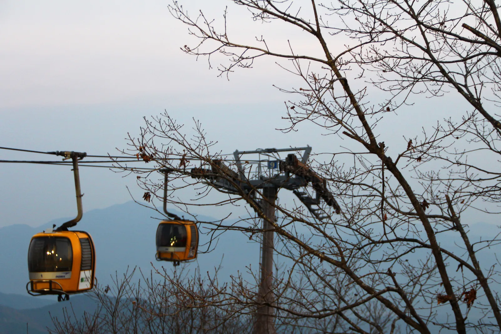
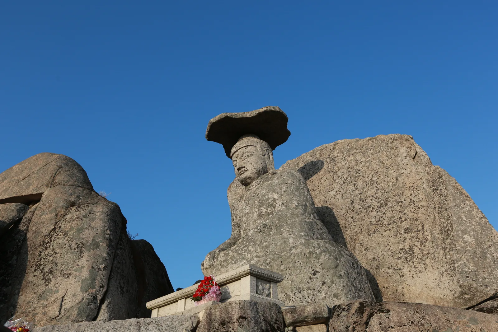
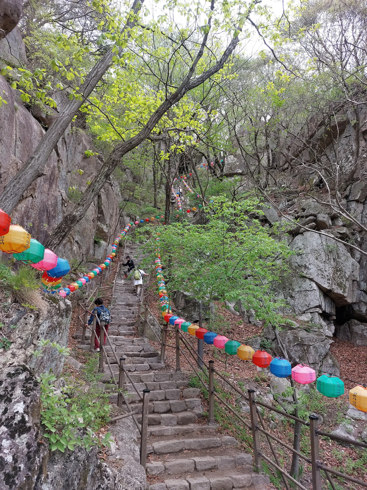
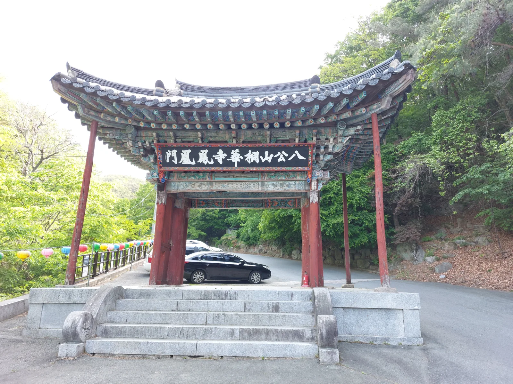
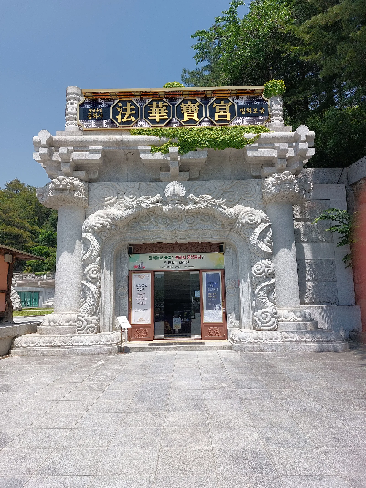
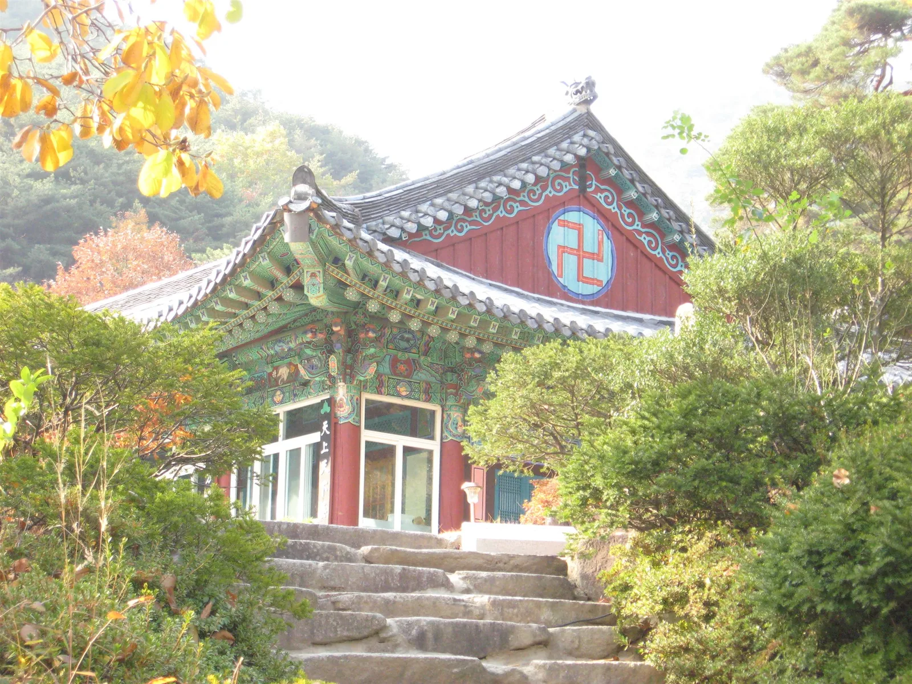
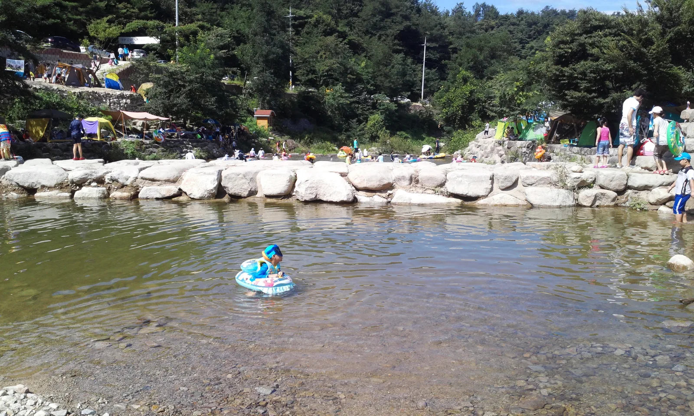

▲ 팔공산 케이블카를 타면 약 7분 만에 해발 820m 신림봉 인근까지 오를 수 있다. 표고차 350m, 선로 길이 1.2km 구간을 자동순환식 곤돌라가 오간다
대구 도심에서 북동쪽으로 약 20km, 차로 30~40분이면 닿는 팔공산(1,193m)은 대구·경산·영천·칠곡·군위 5개 시·군·구에 걸쳐 있는 영남의 진산이다. 1980년 도립공원으로 지정된 이후 43년 만인 2023년 12월 31일, 대한민국 23번째 국립공원으로 승격했다. 정상까지 걸어 오르지 않아도 케이블카를 타면 7분 만에 해발 820m 능선에 설 수 있고, 그 아래로는 한 가지 소원은 꼭 들어준다는 갓바위와 493년 역사의 고찰 동화사가 자리한다. 케이블카 요금·운영시간부터 갓바위·동화사 가는 법, 순환도로 드라이브 코스, 주차 정보까지 방문 전 확인할 내용을 정리했다.
1. 팔공산 케이블카 — 7분 만에 해발 820m 신림봉으로

▲ 팔공산 케이블카는 정원 6인승 곤돌라 24대가 40초 간격으로 자동순환하며 운행한다 ⓒ Wikimedia Commons
팔공산 케이블카는 대구 동구 용수동(팔공산로185길 51)의 동화사지구에서 출발해 표고차 350m, 선로 길이 1.2km 구간을 오른다. 정원 6인승 곤돌라 24대가 40초 간격으로 자동순환식으로 운행되며, 편도 소요시간은 약 7분이다. 정상역은 팔공산 주봉인 비로봉(1,193m)이 아니라 그보다 낮은 신림봉(해발 약 820m) 인근에 있는데, 도보로 능선을 따라 조금 더 오르면 하늘정원 전망대와 비로봉까지 이어진다. 1985년 10월 18일 프랑스 포마갈스키(Pomagalski)사의 설비로 개장한 이래 연중무휴로 운행 중이며, 기상 상황(강풍·폭설 등)에 따라 임시 운행 중단이 있을 수 있어 방문 전 전화 확인이 안전하다.
| 구분 | 왕복 | 편도 |
|---|---|---|
| 대인(성인) | 14,000원 | 11,000원 |
| 경로(만 65세 이상) | 12,000원 | 8,000원 |
| 소인(어린이) | 8,000원 | 6,000원 |
요금은 시기에 따라 조정될 수 있으므로 방문 전 전화(053-982-8801~3)로 확인하는 편이 정확하다. 운행 시작 시각은 오전 9시 30분으로 연중 동일하지만, 종료 시각은 계절·요일별로 달라 평일은 오후 5시 10분~6시 50분, 주말은 오후 5시 30분~7시 10분 사이에서 월별로 상이하게 운영된다. 매표는 운행 종료 1시간 전까지 가능하며, 온라인 사전 예약 없이 현장 발권만 이뤄진다.
2. 주차 정보 — 케이블카 주차장은 무료
케이블카 탑승객이라면 제1·제2주차장을 무료로 이용할 수 있고, 인근 씨네팔공산 주차장은 3,000원이 부과된다. 갓바위를 별도로 찾는다면 대구 동구 진인동의 갓바위 공영주차장(1,000원, 다자녀 가정 500원)을 이용하면 된다. 주말과 단풍철에는 진입로가 정체되는 경우가 많아 오전 일찍 도착하는 편이 여유롭다.
| 항목 | 내용 |
|---|---|
| 위치 | 대구광역시 동구 팔공산로185길 51(용수동) |
| 운행 구간 | 동화사지구 매표소 ↔ 신림봉(해발 약 820m), 편도 1.2km·약 7분 |
| 운행시간 | 09:30 시작(연중동일), 종료는 월별 상이(평일 17:10~18:50, 주말 17:30~19:10 내외) |
| 주차 | 케이블카 제1·2주차장 무료 / 씨네팔공산 주차장 3,000원 |
| 문의 | 053-982-8801~3 |
3. 갓바위 — "한 가지 소원은 꼭 들어준다"는 관봉 석조여래좌상

▲ 해발 850m 관봉 정상의 갓바위(관봉 석조여래좌상). 통일신라시대 조성된 것으로 추정되며 보물 제431호로 지정돼 있다 ⓒ Wikimedia Commons
정식 명칭은 관봉 석조여래좌상(冠峰 石造如來坐像)으로, 높이 약 4m의 좌불 머리 위에 갓 모양의 널찍한 판석을 자연스럽게 얹은 모습 때문에 '갓바위'라 불린다. 통일신라시대에 조성된 것으로 추정되며 1965년 보물 제431호로 지정됐다. 해발 850m 관봉 정상은 대구 동구와 경산시 와촌면의 경계에 걸쳐 있어 두 지역 어느 쪽에서든 오를 수 있는데, '이곳에서 빌면 한 가지 소원은 꼭 들어준다'는 속설 덕분에 수능 시즌마다 전국에서 수험생 부모들이 몰리는 대표적 기도처로 꼽힌다.

▲ 갓바위로 오르는 계단길. 연등이 줄지어 걸려 있어 사계절 참배객의 발길이 끊이지 않는다 ⓒ Wikimedia Commons
갓바위로 오르는 길은 크게 두 갈래다. 대구 동구 진인동 갓바위 집단시설지구(갓바위 주차장)에서 오르면 약 1시간, 경산시 와촌면 선본사 쪽 코스를 이용하면 약 30분이 걸린다. 대중교통은 동대구역에서 401번 시내버스를 타면 약 1시간 만에 닿을 수 있어 접근성이 좋은 편이다. 정상 부근에는 간이 카페와 함께 쌀·초·향·염주 등 기도용품을 파는 매점도 있다.
4. 동화사 — 493년 고찰과 높이 33m 통일약사여래대불

▲ 동화사 입구의 봉황문(鳳凰門). 493년 신라 소지왕 때 창건된 동화사는 현재 대한불교조계종 제9교구 본사다 ⓒ Wikimedia Commons
갓바위 집단시설지구에서 차로 약 20분 거리에 있는 동화사(桐華寺)는 493년(신라 소지왕 15년) 창건된 것으로 전해지는 고찰로, 현재 대한불교조계종 제9교구 본사다. 창건 당시 겨울인데도 절 주위에 오동나무꽃이 만발했다고 해서 '동화사'라는 이름이 붙었다는 설이 전해진다. 경내 규모가 커서 봉황문을 시작으로 여러 전각과 문화재를 둘러보는 데만 반나절이 걸릴 정도다.

▲ 통일약사여래대불 경내로 이어지는 법화보궁 입구. 대불은 1990년 착공해 1992년 11월 점안식을 가졌다 ⓒ Wikimedia Commons
동화사를 대표하는 볼거리는 단연 통일약사여래대불(통일대불)이다. 남북 분단의 아픔을 해소하고 민족 화합을 기원하며 1990년 10월 착공, 25개월간의 공사 끝에 1992년 11월 점안식을 가졌다. 불상 높이 17m에 좌대 13m, 지하 기단부 3m를 더해 전체 높이가 33m·최대 둘레 16.5m에 이르는 세계 최대급 좌불상으로, 전북 익산의 석공 108명이 7개월간 불상 원석(황등석 2,000톤)과 좌대 원석(3,000톤), 도합 5,000톤의 화강석을 다듬어 만들었다. 대불 앞에는 각각 17m 높이의 삼층석탑 2기와 7.6m 높이의 석등 2기가 함께 조성돼 있다. 점안식 당시 여야 대선후보들이 함께 참석해 통일을 염원했을 만큼 상징성이 큰 불상이다.
5. 팔공산순환도로 드라이브 — 파계사·동화사·갓바위를 잇는 25km

▲ 팔공산 서쪽 기슭의 파계사. 804년 심지왕사가 창건한 것으로 전해지며, 영조의 탄생 설화가 얽혀 있다 ⓒ Wikimedia Commons
팔공산순환도로는 대구 동구 진인동(갓바위 방면)에서 칠곡군 동명면 동명네거리까지 이어지는 약 25km 구간으로, 왕복 2차로 산복도로를 따라 송림사·파계사·부인사·동화사 등 고찰을 두루 거친다. 그중 파계사는 팔공산 서쪽 기슭에 자리한 사찰로, 804년(신라 애장왕 5년) 심지왕사가 창건했다고 전해진다. 조선 숙종이 후사를 얻기 위해 영원선사에게 백일기도를 부탁했고, 그 결과 태어난 아들이 훗날의 영조라는 설화로도 유명하다. 경내 원통전은 1605~1606년 지어진 건물로, 1984년 대구광역시 유형문화재 제7호로 지정됐다가 2014년 12월 보물 제1850호로 승격됐다.
드라이브 코스로는 파계삼거리~수태골~동화사~갓바위 구간이 가장 인기가 많다. 양옆으로 울창한 나무가 터널처럼 이어져 단풍철이면 붉게 물든 길이 장관을 이루고, 완만한 중고속 코너가 많아 와인딩을 즐기는 드라이버들도 즐겨 찾는다. 한티재 휴게소와 팔공산 케이블카 입구를 기점 삼아 코스를 짜는 경우가 많으며, 순환도로 구간 곳곳에 전망 포인트와 휴게 공간이 마련돼 있어 계곡·능선 풍경을 즐기며 천천히 돌아보기 좋다.
국립공원공단에서 팔공산국립공원 탐방 정보 확인 가능6. 팔공산 케이블카·갓바위·동화사, 가기 전 체크리스트

▲ 팔공산 자락의 계곡. 여름철에는 물놀이와 야영을 겸해 찾는 방문객도 많다 ⓒ Wikimedia Commons
✅ 팔공산 케이블카·갓바위·동화사, 가기 전 체크리스트
· 팔공산은 1980년 도립공원 지정 후 43년 만인 2023년 12월 31일 대한민국 23번째 국립공원으로 승격
· 케이블카는 동화사지구~신림봉(해발 820m) 구간 1.2km, 편도 약 7분, 대인 왕복 14,000원·편도 11,000원(2025~2026년 기준)
· 운행은 09:30 시작(연중무휴), 종료 시각은 월별로 상이해 방문 전 확인 필요
· 케이블카 제1·2주차장은 무료, 갓바위 공영주차장은 1,000원
· 갓바위(관봉 석조여래좌상, 보물 431호)는 갓바위주차장 코스 약 1시간, 선본사 코스 약 30분
· 동화사는 493년 창건, 통일약사여래대불은 전체 높이 33m로 1992년 점안
· 팔공산순환도로(약 25km)로 파계사·동화사·갓바위를 잇는 드라이브 코스 구성 가능